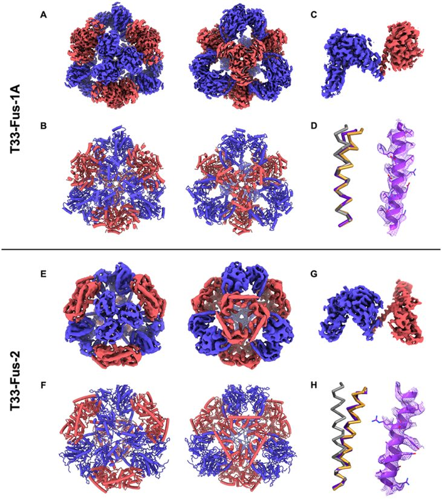
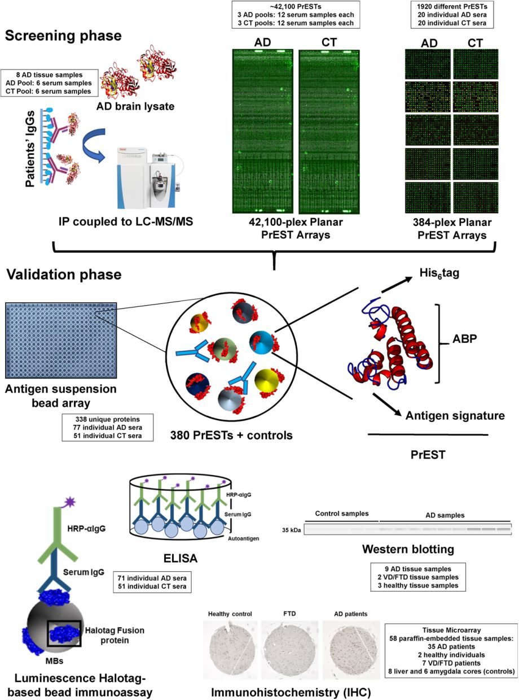

Structural biologist · cryo-EM · Protein design · Proteomics
PabloSan Segundo Acosta
Senior Researcher, Structural Biology Programme, Spanish National Cancer Research Centre (CNIO), Madrid
Guest Scientist, Max Planck Institute of Biophysics, Frankfurt
I solve the structures of metalloenzymes and redox complexes by cryo-EM, and now use AI-driven protein design to build new protein assemblies for biomedicine.
Springer: Methods in Molecular Biology, Neuromethods and Advances in NADPH Oxidases Research
4
research prizes
EAACI ×2, SICAM, SEPROT · SEBBM Article of the Month ×2
4 + 1
competitive fellowships
FPU · EMBO · Alfonso Martín Escudero · Sara Borrell, plus an Alexander von Humboldt fellowship awarded and declined
h-index and citations as of August 2026 · publication counts derived from the list below
About
Senior Researcher in Integrative Structural Biology
I am a biochemist with extensive experience in structural biology, protein design and proteomics. During my PhD at the Universidad Complutense de Madrid and the Instituto de Salud Carlos III (FPU fellowship, Villalba and Barderas labs) I built immunoproteomics, phage-display and protein-microarray pipelines for biomarker discovery, which led to the identification of a new cross-reactive olive-pollen allergen (cyclophilin, Ole e 15) and of autoantibody biomarkers of Alzheimer's disease. I defended the thesis in March 2020 with the highest distinction and an International Doctorate mention, after an EMBO short-term fellowship at SciLifeLab–KTH in Stockholm.
I then moved to Germany: first to Ivan Matic's lab at the Max Planck Institute for Biology of Ageing (Cologne), where I characterised new ADP-ribosylation antibodies for a chemical-biology resource published in Cell, and from 2021 to Bonnie Murphy's cryo-EM group at the Max Planck Institute of Biophysics (Frankfurt), where I turned to integrative structural biology, funded by an Alfonso Martín Escudero fellowship after also being awarded, and declining, an Alexander von Humboldt fellowship. There I led two cryo-EM projects on metalloenzymes: the mechanism of the bacterial NADPH oxidase SpNOX (Nature Structural & Molecular Biology, 2024) and, with Seigo Shima's group, the electron-transfer complexes of methanogenic archaea (Nature, 2025; Science Advances, 2026). The NSMB 2024 and Nature 2025 papers were each selected Article of the Month by the Spanish Society of Biochemistry and Molecular Biology (SEBBM).
Back in Spain as a Sara Borrell fellow at the ISCIII (2023–2025) I trained in data-independent-acquisition mass spectrometry on the Astral instrument, a capability that was instrumental in finalising the Nature study, and contributed to the EIC Pathfinder project ALADDIN and to multiplexed biosensor work. Since March 2025 I have been a Senior Researcher at the CNIO in Roger Castells-Graells's group, combining helical-fusion strategies, machine-learning design and cryo-EM validation to engineer new protein cages and assemblies (Journal of the American Chemical Society, 2026). I keep a Guest Scientist appointment at the Max Planck Institute of Biophysics to sustain the collaboration with the Murphy group.
Career path
2025 –
Senior Researcher
CNIO, Structural Biology Programme (Castells-Graells lab), Madrid
AI-designed protein assemblies validated by cryo-EM. Guest Scientist at the MPI of Biophysics since 2025.
2023 – 2025
Sara Borrell Postdoctoral Fellow
Instituto de Salud Carlos III, Madrid
DIA mass spectrometry (Astral), affinity proteomics.
2021 – 2023
Alfonso Martín Escudero Postdoctoral Fellow
Max Planck Institute of Biophysics (Murphy lab), Frankfurt
Cryo-EM of NADPH oxidase and of methanogen electron-transfer supercomplexes. Humboldt fellowship awarded and declined.
2020 – 2021
Postdoctoral Researcher
Max Planck Institute for Biology of Ageing (Matic lab), Cologne
Characterisation of ADP-ribosylation antibodies (Cell, 2020).
2015 – 2020
PhD in Biochemistry (FPU fellow)
Universidad Complutense de Madrid & ISCIII (Villalba and Barderas labs)
Immunoproteomics for biomarker discovery in olive-pollen allergy and Alzheimer's disease. Cum laude, International Doctorate. EMBO short-term fellowship at SciLifeLab–KTH (2018).
2010 – 2015
BSc in Biochemistry · MSc in Immunology Research
Universidad Complutense de Madrid
BSc 2014 (second-highest grade in the cohort), MSc 2015.
Research
Five lines of work, from immunoproteomics to cryo-EM and protein design
Each theme below frames the problem, what I did and the skills it demonstrates, followed by the papers. Click any theme tile to jump to it, and any paper to open its figure, summary and links. Every paper and theme has its own link you can share.
01 · 3 papers · 3 as first or co-first author2021 – 2026 · Max Planck Institute of Biophysics (postdoc 2021–2023, guest scientist since 2025)
Metalloproteins and redox enzymes by cryo-EM
How electrons move through nature's metal-containing machines
In Bonnie Murphy's Redox and Metalloprotein Research Group I led two cryo-EM projects on cofactor-rich redox enzymes. The first solved the bacterial NADPH oxidase SpNOX in four functional states and explained how a single phenylalanine gates hydride transfer. The second, with Seigo Shima's group (Max Planck Institute for Terrestrial Microbiology, Marburg), showed that under the nickel limitation typical of natural habitats Methanothermobacter marburgensis reroutes its reducing electrons through the nickel-free [Fe]-hydrogenase and the Elp proteins; I carried out the cryo-EM analysis of the Elp–Hdr complexes (Nature 2025) and led the structure of the (Mvh-Hdr)₂-Fmd₄ supercomplex that catalyses the CO₂-fixing first step of methanogenesis (Science Advances 2026). The ~1 MDa, oxygen-sensitive methanogen complexes had to be purified and vitrified under strictly anaerobic conditions, the reduced NADH-bound state of SpNOX was prepared anaerobically, and both projects required resolving several conformational states from heterogeneous cryo-EM datasets.
Skills demonstrated
Single-particle cryo-EM (collection, processing, model building)
Anaerobic purification of O₂-sensitive metalloenzymes
Pablo San Segundo-Acosta, Shunsuke Nomura, Joao Pedro Fernandes-Queiroz, …, Bonnie J. Murphy
The first step of methanogenesis, the reduction and fixation of CO₂ by formylmethanofuran dehydrogenase (Fmd), is powered by low-potential electrons from the electron-bifurcating heterodisulfide reductase (Hdr). We report the cryo-EM structure of a C2-symmetric (Mvh-Hdr)₂-Fmd₄ supercomplex from the Class I methanogen Methanothermobacter marburgensis, architecturally different from the ring-shaped D3-symmetric supercomplex previously seen in a Class II methanogen. Two MvhB polyferredoxins wire the Hdr and Fmd active sites together with branching electron paths that could serve other partners. Phylogenetic analysis suggests the C2 form is ancestral and that the D3 supercomplexes were acquired by horizontal gene transfer.
Shunsuke Nomura, Pablo San Segundo-Acosta, Evgenii Protasov, Masanori Kaneko, Jörg Kahnt, Bonnie J. Murphy, Seigo Shima
Methanogenic archaea produce most of the planet's biogenic methane, but they are normally studied in nickel-rich laboratory media, far from the nanomolar nickel of their natural habitats. We show that under strict nickel limitation Methanothermobacter marburgensis strongly downregulates its [NiFe]-hydrogenases and routes all reducing electrons through the nickel-free [Fe]-hydrogenase Hmd and a set of F₄₂₀-dependent electron-donating proteins (Elp). Biochemical and cryo-EM characterisation of Elp–Hdr complexes confirms how Elp plugs into the electron-bifurcating heterodisulfide reductase, and the conservation of these genes suggests an alternative route for electron flow in CO₂-reducing methanogens under nickel limitation.
Victor R. A. Dubach, Pablo San Segundo-Acosta, Bonnie J. Murphy
NADPH oxidases (NOXs) make the reactive oxygen species that eukaryotic cells use for immunity and signalling; the bacterial homologue SpNOX is a tractable model because it is active and stable in detergent. We solved cryo-EM structures of SpNOX substrate-free, bound to NADH, and bound to NADPH under turnover conditions for the wild type and an F397A mutant. The structures trace the electron-transfer path from NADPH through FAD to the two haems and reveal a hydride-transfer mechanism gated by the displacement of Phe397. Structure-guided mutagenesis and biochemistry explain why the enzyme does not discriminate NADPH from NADH and suggest why it is constitutively active.
Victor R. A. Dubach, Pablo San Segundo-Acosta, Bonnie J. Murphy
Book chapter
No entries match the current filter in this theme.
Related: co-first and co-corresponding author of the NSMB 2024 paper; book chapter on bacterial NADPH oxidases (Springer, 2026); two invited talks at the Spanish Biophysical Society congress 2025 and an oral at the 46th SEBBM congress 2024; SEBBM Article of the Month, Sept 2024 and Dec 2025.
02 · 1 paper · 1 as first or co-first author2025 – · CNIO, Madrid
Protein design
Building new protein architectures with AI, and checking them atom by atom
At the CNIO I apply generative and machine-learning protein design to engineer self-assembling protein cages and scaffolds. In the first study of this line we revisited the classic helical-fusion strategy with modern AI sequence design and a more rigorous treatment of helix bending, obtaining tetrahedral cages built only from trimeric building blocks; cryo-EM structures at 3.0–3.9 Å matched the designs with backbone deviations as low as 2 Å over the whole assembly. The same pipeline, design → expression → biophysical screening → cryo-EM validation, now feeds projects on cryo-EM scaffolds, virus-like particles and hypoallergenic allergen variants.
Skills demonstrated
ML sequence and backbone design (ProteinMPNN, RFdiffusion, AlphaFold/Boltz)
Symmetric assembly and helical-fusion design
Recombinant production and biophysical screening (SEC, NS-EM)
Cryo-EM validation of designs
Featured papers

Journal of the American Chemical Society· 2026· 148(41): 44372–44379
Pablo San Segundo-Acosta, Johanne Le Coq, Jasminka Boskovic, Robin A. Aglietti, Peter Bowers, Todd O. Yeates, Roger Castells-Graells
Self-assembling protein cages are useful scaffolds for vaccines, drug delivery and structural biology. We revisited the original strategy for building them, fusing oligomeric domains through continuous α-helices, with machine-learning sequence design and a more rigorous treatment of how helices bend, to create tetrahedral cages made only of trimeric building blocks. Of 15 designs tested, two assembled into soluble, monodisperse 12-subunit particles of the expected mass (633 and 638 kDa). Cryo-EM structures of three sequence variants at 3.0–3.9 Å confirmed the designs in atomic detail, with Cα deviations as low as 2 Å over the whole assembly, and validated the predicted helix bending.
No entries match the current filter in this theme.
Related: project PID2024-161096NA-I00 (AI-designed protein assemblies as markers and molecular scaffolds for cryo-EM); contribution to the CNIO–CaixaResearch Frontiers Meeting 2025 on virus-like particles from human gag-like proteins.
03 · 4 papers · 3 as first or co-first author2014 – 2020 · UCM and ISCIII
Allergy: the olive-pollen allergome and allergen engineering
Finding the missing allergens of olive pollen and mapping how IgE sees them
Olive pollen is one of the main causes of pollinosis in the Mediterranean and the main sensitiser where olive is extensively cultivated, yet much of its proteome, and hence of its allergen repertoire, was unknown. I first developed a T7 phage-display/microarray screen to pick up IgE-reactive peptides and mimotopes from complex allergenic sources (2015–2018). Combining the olive genome with deep LC-MS/MS proteomics, we then delineated the pollen proteome (1,907 proteins) and its allergenome (203 proteins in 47 allergen families) and identified cyclophilin as a new, highly cross-reactive allergen, Ole e 15. Finally, I engineered chimeras between Ole e 15 and its human homologue PPIA to map the surface regions recognised by patients' IgE.
Pablo San Segundo-Acosta, Carmen Oeo-Santos, Ana Navas, Aurora Jurado, Mayte Villalba, Rodrigo Barderas
Ole e 15 belongs to the cyclophilin pan-allergen family, whose members cross-react across plants, animals and moulds. To find out which parts of its surface patients' IgE recognises, I grafted the residues that differ between Ole e 15 and its weakly cross-reactive human homologue PPIA onto Ole e 15, producing eight chimeras in E. coli, and tested them with sera from 20 sensitised patients together with overlapping peptides spanning the sequence. Every patient showed a different pattern of reduced IgE binding, revealing a highly polyclonal, patient-specific response, and two surface areas carrying the main conformational epitopes were identified, the first such map for an allergenic cyclophilin.
Pablo San Segundo-Acosta, Carmen Oeo-Santos, Sara Benedé, …, Rodrigo Barderas
Olive pollen is one of the most important allergenic sources worldwide, yet many of its proteins were unknown. Combining the olive genome with in-depth LC-MS/MS we identified 1,907 pollen proteins and defined the allergenome: 203 proteins from 47 allergen families. A cyclophilin produced in E. coli turned out to be a new allergen, Ole e 15, recognised strongly by sensitised patients, most of them children, and highly cross-reactive with pollen, plant-food and animal extracts.
Pablo San Segundo-Acosta, María Garranzo-Asensio, Carmen Oeo-Santos, …, Rodrigo Barderas
Olive pollen and yellow mustard seeds cause clinically important allergies, but sensitive methods to find their IgE-reactive components were lacking. We built T7 phage-display libraries from both sources, enriched them with patients' sera and printed 1,536 monoclonal phages as microarrays. Screening with individual sera revealed 10 olive-pollen and 9 mustard-seed IgE-reactive sequences; five were expressed as fusion proteins and validated, showing that phage microarrays can identify allergenic peptides, proteins and mimotopes directly with patients' IgE.
No entries match the current filter in this theme.
Related: Best Oral Presentation Award, EAACI 2018; Best Poster Prize, EAACI 2015; book chapter on epitope mapping of lipid transfer proteins.
04 · 6 papers · 3 as first or co-first author2015 – 2025 · UCM, ISCIII and SciLifeLab–KTH
Neurodegeneration: autoantibody biomarkers of Alzheimer's disease
Reading the immune system's record of a disease that starts decades before symptoms
When this work began in 2015, Alzheimer's disease could only be confirmed post mortem and blood-based markers for the preclinical stage were lacking. My doctoral work asked whether the humoral immune response could provide them. Using T7 phage display from AD brain cDNA printed as phage microarrays, high-density protein epitope signature tag (PrEST) arrays at SciLifeLab and immunoprecipitation coupled to mass spectrometry, we identified and validated panels of AD-specific autoantigens, including ANTXR1, NUPR1, PYGB, OR8J1, IVD, CYFIP1 and ADD2, and showed that frameshift APP+1 and UBB+1 proteins also elicit autoantibodies; in parallel, antibody microarrays of prefrontal cortex revealed AD-specific protein alterations (TOPORS, layilin, MICB). Several of these targets were later turned into multiplexed electrochemical biosensors with our collaborators.
Skills demonstrated
T7 phage display and phage microarrays
Protein, antibody and PrEST microarrays
Immunoprecipitation–LC-MS/MS
HaloTag-based immunoassays
Biomarker validation (ROC analysis)
Featured papers

Journal of Proteome Research· 2021· 20(11): 5115–5130
Pablo San Segundo-Acosta, Ana Montero-Calle, August Jernbom-Falk, …, Rodrigo Barderas
Serum autoantibodies are attractive blood biomarkers for the long preclinical phase of Alzheimer's disease. We profiled them with complementary untargeted methods: high-density (42,100 antigens) and low-density planar protein-epitope signature tag (PrEST) arrays, and immunoprecipitation coupled to mass spectrometry. From 377 candidate antigens, seroreactivity against IVD, CYFIP1 and ADD2 was validated in 128 sera by suspension bead arrays, ELISA and HaloTag bead immunoassays; combined, the three showed clear diagnostic ability, and their protein levels were also altered in AD prefrontal cortex.
Pablo San Segundo-Acosta, Ana Montero-Calle, Manuel Fuentes, Alberto Rábano, Mayte Villalba, Rodrigo Barderas
To capture the autoantibodies that Alzheimer's patients raise against their own brain proteins, we used commercial T7 phage-display libraries built from AD and healthy brain mRNA, enriched them for AD-specific phages and printed 1,536 monoclonal phages as microarrays. Probing with sera identified 57 reactive phages; 13 unique sequences were validated in 120 sera, and peptides from ANTXR1, NUPR1, PYGB and OR8J1 expressed as HaloTag fusions discriminated patients from controls, a panel we later carried into electrochemical biosensors (Analysis & Sensing 2021; Biosensors and Bioelectronics 2025).
Maria Garranzo-Asensio, Pablo San Segundo-Acosta, Javier Martínez-Useros, …, Rodrigo Barderas
Using two antibody-microarray platforms covering 706 signalling and cell-communication proteins, we compared prefrontal cortex from AD patients at Braak stages IV–VI with healthy, frontotemporal-dementia and vascular-dementia controls. Forty altered proteins were found and validated by mRNA meta-analysis, western blot, FISH and immunohistochemistry on a 44-sample tissue microarray, identifying AD-specific changes in TOPORS, layilin (LAYN) and MICB and confirming DDIT3 and XIAP.
No entries match the current filter in this theme.
Related: EMBO Short-Term Fellowship at SciLifeLab–KTH (2018); IMMUNOTEK Prize (SICAM 2015) and Best Poster Short-Communication Prize (SEPROT 2019); oral at AAIC 2017; projects PI17CIII/00045 (immunoproteomics axis) and MedPer (ISCIII); book chapters on protein and phage microarrays.
05 · 5 papers2016 – 2025
Collaboration papers
Contributions to colleagues' projects, from ADP-ribosylation to electrochemical biosensors
Alongside my own lines I have contributed protein chemistry, antibody characterisation and biomarker expertise to collaborative projects: the chemical-biology and recombinant-antibody resource for ADP-ribosylation developed in Ivan Matic's lab (Cell, 2020), seroproteomic discovery of colorectal-cancer autoantigens, and a series of electrochemical biosensors with the Campuzano–Pingarrón group at UCM for DNA methylation and microRNA detection.
Juan José Bonfiglio, Orsolya Leidecker, Helen Dauben, …, Pablo San Segundo-Acosta, …, Ivan Matic
ADP-ribosylation is a central but hard-to-study post-translational modification. This resource describes a phospho-guided chemoenzymatic route, based on the HPF1/PARP1 serine-ADP-ribosylation writer complex, to make pure, precisely modified peptides at scale, and uses them with phage display to generate site-specific and broad-specificity recombinant antibodies to mono-ADP-ribosylation. The tools reveal that PARP1 and histone H3 are predominantly mono-ADP-ribosylated after DNA damage, under the control of PARG and ARH3.
No entries match the current filter in this theme.
Related: oral presentation at the Cold Spring Harbor Laboratory meeting “The PARP Family and ADP-Ribosylation” (December 2020); the Cell 2020 resource has been cited more than 110 times.
Full publication list, newest first (25 entries)
Victor R. A. Dubach, Pablo San Segundo-Acosta, Bonnie J. Murphy (2026)Bacterial NADPH oxidases.Advances in NADPH Oxidases Research (Springer) (book chapter).
Pablo San Segundo-Acosta*, Shunsuke Nomura*, Joao Pedro Fernandes-Queiroz, Evgenii Protasov, Jörg Kahnt, Masanori Kaneko, Georg Hochberg✉, Seigo Shima✉, Bonnie J. Murphy✉(2026)Diversity of electron-bifurcating CO₂-fixing supercomplexes in methanogens.Science Advances 12(38): eaed3711. doi:10.1126/sciadv.aed3711
Pablo San Segundo-Acosta, Johanne Le Coq, Jasminka Boskovic, Robin A. Aglietti, Peter Bowers, Todd O. Yeates, Roger Castells-Graells✉(2026)Design and structure of protein cages based on helical fusion and machine learning.Journal of the American Chemical Society 148(41): 44372–44379. doi:10.1021/jacs.6c11491
Rodrigo Barderas, Ana Montero-Calle, Pablo San Segundo-Acosta(2025)Protein microarray analysis with GenePix.Protein Arrays: Methods and Protocols (Methods in Molecular Biology 2929, Springer) pp. 85–95 (book chapter). doi:10.1007/978-1-0716-4595-6_7
Rodrigo Barderas, Pablo San Segundo-Acosta, Ana Montero-Calle (2025)Cytokine antibody microarray-based proteomic strategies for characterizing the dysregulation of cytokines disease-specific.Protein Arrays: Methods and Protocols (Methods in Molecular Biology 2929, Springer) pp. 195–213 (book chapter). doi:10.1007/978-1-0716-4595-6_15
Eloy Povedano*, María Garranzo-Asensio*, Ana Montero-Calle, Alejandro Valverde, Pablo Dalmasso, Pablo San Segundo-Acosta, Olga Cano, Mónica Vázquez, Vicente Mas, María Jesús Fernández-Aceñero, Gustavo Rivas, José M. Pingarrón✉, Susana Campuzano✉, Rodrigo Barderas✉(2025)Novel 6xHis/HaloTag mammalian expressed autoantigens for the detection of humoral response with multiplexed electrochemical biosensors: a breakthrough in colorectal cancer and Alzheimer's disease personalized diagnostics.Biosensors and Bioelectronics 282: 117506. doi:10.1016/j.bios.2025.117506
Shunsuke Nomura*, Pablo San Segundo-Acosta*, Evgenii Protasov, Masanori Kaneko, Jörg Kahnt, Bonnie J. Murphy✉, Seigo Shima✉(2025)Electron flow in hydrogenotrophic methanogens under nickel limitation.Nature 644: 490–496. doi:10.1038/s41586-025-09229-y
Victor R. A. Dubach*, Pablo San Segundo-Acosta*✉, Bonnie J. Murphy✉(2024)Structural and mechanistic insights into Streptococcus pneumoniae NADPH oxidase.Nature Structural & Molecular Biology 31: 1769–1777. doi:10.1038/s41594-024-01348-w
Ana Montero-Calle*, Pablo San Segundo-Acosta*, María Garranzo-Asensio, Guillermo Solís-Fernández, Maricruz Sanchez-Martinez, Rodrigo Barderas (2021)Phage microarrays for screening of humoral immune responses.Protein Microarrays for Disease Analysis: Methods and Protocols (Methods in Molecular Biology 2344, Springer) pp. 31–46 (book chapter). doi:10.1007/978-1-0716-1562-1_3
Clara San Bartolomé, Carmen Oeo-Santos, Pablo San Segundo-Acosta, Rosa Muñoz-Cano, Javier Martínez-Botas, Joan Bartra, Mariona Pascal (2021)Epitope mapping of allergenic lipid transfer proteins.Protein Microarrays for Disease Analysis: Methods and Protocols (Methods in Molecular Biology 2344, Springer) pp. 107–117 (book chapter). doi:10.1007/978-1-0716-1562-1_8
Alejandro Valverde*, Ana Montero-Calle*, Beatriz Arévalo, Pablo San Segundo-Acosta, Verónica Serafín, Miren Alonso-Navarro, Guillermo Solís-Fernández, José M. Pingarrón✉, Susana Campuzano✉, Rodrigo Barderas✉(2021)Phage-derived and aberrant HaloTag peptides immobilized on magnetic microbeads for amperometric biosensing of serum autoantibodies and Alzheimer's disease diagnosis.Analysis & Sensing 1: 161–165. doi:10.1002/anse.202100024
Pablo San Segundo-Acosta*, Ana Montero-Calle*, August Jernbom-Falk, Miren Alonso-Navarro, Elisa Pin, Eni Andersson, Cecilia Hellström, MariCruz Sánchez-Martínez, Alberto Rábano, Guillermo Solís-Fernández, Alberto Peláez-García, Javier Martínez-Useros, María Jesús Fernández-Aceñero, Anna Månberg, Peter Nilsson, Rodrigo Barderas✉(2021)Multiomics profiling of Alzheimer's disease serum for the identification of autoantibody biomarkers.Journal of Proteome Research 20(11): 5115–5130. doi:10.1021/acs.jproteome.1c00630
Ana Montero-Calle, Pablo San Segundo-Acosta, María Garranzo-Asensio, Alberto Rábano, Rodrigo Barderas✉(2020)The molecular misreading of APP and UBB induces a humoral immune response in Alzheimer's disease patients with diagnostic ability.Molecular Neurobiology 57(2): 1009–1020. doi:10.1007/s12035-019-01809-0
María Garranzo-Asensio, Pablo San Segundo-Acosta, Carmen Povés, María Jesús Fernández-Aceñero, Javier Martínez-Useros, Ana Montero-Calle, Guillermo Solís-Fernández, Maricruz Sanchez-Martinez, Nuria Rodríguez, María Ángeles Cerón, Servando Fernandez-Diez, Gemma Domínguez, Vivian de los Ríos, Alberto Peláez-García, Ana Guzmán-Aránguez, Rodrigo Barderas✉(2020)Identification of tumor-associated antigens with diagnostic ability of colorectal cancer by in-depth immunomic and seroproteomic analysis.Journal of Proteomics 214: 103635. doi:10.1016/j.jprot.2020.103635
Carmen Oeo-Santos, Juan Carlos López-Rodríguez*, Cristina García-Mouton*, Pablo San Segundo-Acosta, Aurora Jurado, Carmen Moreno-Aguilar, Begoña García-Álvarez, Jesús Pérez-Gil, Mayte Villalba, Rodrigo Barderas✉, Antonio Cruz✉(2020)Biophysical and biological impact on the structure and IgE-binding of the interaction of the olive pollen allergen Ole e 7 with lipids.Biochimica et Biophysica Acta (BBA) – Biomembranes 1862(6): 183258. doi:10.1016/j.bbamem.2020.183258
Juan José Bonfiglio*, Orsolya Leidecker*, Helen Dauben*, Edoardo José Longarini*, Thomas Colby, Pablo San Segundo-Acosta, Kathryn A. Perez, Ivan Matic✉(2020)An HPF1/PARP1-based chemical biology strategy for exploring ADP-ribosylation.Cell 183(4): 1086–1102. doi:10.1016/j.cell.2020.09.055
Pablo San Segundo-Acosta, Carmen Oeo-Santos, Ana Navas, Aurora Jurado, Mayte Villalba, Rodrigo Barderas✉(2019)Ole e 15 and its human counterpart -PPIA- chimeras reveal an heterogeneous IgE response in olive pollen allergic patients.Scientific Reports 9: 15027. doi:10.1038/s41598-019-51005-2
Pablo San Segundo-Acosta*, Ana Montero-Calle*, Manuel Fuentes, Alberto Rábano, Mayte Villalba, Rodrigo Barderas✉(2019)Identification of Alzheimer's disease autoantibodies and their target biomarkers by phage microarrays.Journal of Proteome Research 18(7): 2940–2953. doi:10.1021/acs.jproteome.9b00258
Pablo San Segundo-Acosta, Carmen Oeo-Santos, Sara Benedé, Vivian de los Ríos, Ana Navas, Berta Ruiz-Leon, Carmen Moreno, Carlos Pastor-Vargas, Aurora Jurado, Mayte Villalba, Rodrigo Barderas✉(2019)Delineation of the olive pollen proteome and its allergenome unmasks cyclophilin as a relevant cross-reactive allergen.Journal of Proteome Research 18(8): 3052–3066. doi:10.1021/acs.jproteome.9b00167
Eloy Povedano, Alejandro Valverde, Víctor Ruiz-Valdepeñas Montiel, María Pedrero, Paloma Yáñez-Sedeño, Rodrigo Barderas, Pablo San Segundo-Acosta, Alberto Peláez-García, Marta Mendiola, David Hardisson, Susana Campuzano✉, José M. Pingarrón✉(2018)Rapid electrochemical assessment of tumor suppressor gene methylations in raw human serum and tumor cells and tissues using immuno-magnetic beads and selective DNA hybridization.Angewandte Chemie International Edition 57(27): 8194–8198. doi:10.1002/anie.201804339
Maria Garranzo-Asensio*, Pablo San Segundo-Acosta*, Javier Martínez-Useros, Ana Montero-Calle, María Jesús Fernández-Aceñero, Anna Häggmark-Månberg, Alberto Pelaez-Garcia, Mayte Villalba, Alberto Rabano, Peter Nilsson, Rodrigo Barderas✉(2018)Identification of prefrontal cortex protein alterations in Alzheimer's disease.Oncotarget 9(13): 10847–10867. doi:10.18632/oncotarget.24303
Pablo San Segundo-Acosta*, María Garranzo-Asensio*, Carmen Oeo-Santos, Ana Montero-Calle, Joaquín Quiralte, Javier Cuesta-Herranz, Mayte Villalba✉, Rodrigo Barderas✉(2018)High-throughput screening of T7 phage display and protein microarrays as a methodological approach for the identification of IgE-reactive components.Journal of Immunological Methods 456: 44–53. doi:10.1016/j.jim.2018.02.011
Eloy Povedano, Eva Vargas, Víctor Ruiz-Valdepeñas Montiel, Rebeca M. Torrente-Rodríguez, María Pedrero, Rodrigo Barderas, Pablo San Segundo-Acosta, Alberto Peláez-García, Marta Mendiola, David Hardisson, Susana Campuzano✉, José M. Pingarrón✉(2018)Electrochemical affinity biosensors for fast detection of gene-specific methylations with no need for bisulfite and amplification treatments.Scientific Reports 8: 6418. doi:10.1038/s41598-018-24902-1
Pablo San Segundo-Acosta*, María Garranzo-Asensio*, Ana Montero-Calle, Carmen Oeo-Santos, Mayte Villalba, Ana Guzman-Aranguez, Rodrigo Barderas (2017)Protein microarrays in neurodegenerative diseases.Current Proteomic Approaches Applied to Brain Function (Neuromethods 127, Springer) pp. 43–62 (book chapter). doi:10.1007/978-1-4939-7119-0_4
Rebeca M. Torrente-Rodríguez*, Víctor Ruiz-Valdepeñas Montiel*, Susana Campuzano✉, Meryem Farchado-Dinia, Rodrigo Barderas, Pablo San Segundo-Acosta, Juan José Montoya, José M. Pingarrón✉(2016)Fast electrochemical miRNAs determination in cancer cells and tumor tissues with antibody-functionalized magnetic microcarriers.ACS Sensors 1(7): 896–903. doi:10.1021/acssensors.6b00266
* equal contribution · ✉ corresponding author
Recognition
Talks, prizes and fellowships
Selected talks
2026
Characterisation of redox and metalloproteins using cryo-EM and proteomics
Research seminar, Universidad Complutense de Madrid, 10 April 2026 · Invited seminar
2025
Structural insights into Streptococcus pneumoniae NADPH oxidase
XVIII International Congress of the Spanish Biophysical Society (SBE), Madrid · Invited oral
2025
Cryo-EM structures of the Elp–Hdr and Mvh–Hdr–Fmd supercomplexes confirm an altered electron flow in M. marburgensis under nickel limitation
XVIII International Congress of the Spanish Biophysical Society (SBE), Madrid · Invited oral
2025
Structure-based engineering of virus-like particles formed by endogenous human gag-like proteins
La Caixa Frontiers Meeting “Machines acting on DNA and RNA”, Madrid · Invited oral
2024
Structural and mechanistic insights into S. pneumoniae NADPH oxidase
46th SEBBM Congress, A Coruña · Oral
2020
Characterization of novel ADPr antibodies
Cold Spring Harbor Laboratory meeting “The PARP Family and ADP-Ribosylation” (online) · Oral
2019
Identification of specific autoantibody targets in Alzheimer's disease
VI Biennial Meeting of Young Researchers in Proteomics (SEPROT), Madrid · Short poster communication · Best Poster Short-Communication Prize
2018
Immunoproteomic approaches to solve the proteomic profile of olive pollen
XII EuPA Congress, Santiago de Compostela · Oral
2018
New immunoproteomic approaches to delineate the complete proteomic profile of olive pollen
EAACI Congress 2018, Munich · Oral · Best Oral Presentation Award
2017
Identification of protein targets of the humoral immune response in Alzheimer's disease combining immunoprecipitation, phage display and LC-MS/MS
AAIC 2017, London · Oral
2015
Identification of new allergens from olive pollen and mustard seeds using T7 phage-display libraries on microarrays
EAACI Congress 2015, Barcelona · Poster · Best Poster Prize
Prizes and fellowships
2025
SEBBM Article of the Month (December)
Nature 2025, electron flow in methanogens under nickel limitation
2024
SEBBM Article of the Month (September)
Nature Structural & Molecular Biology 2024, S. pneumoniae NADPH oxidase
2023
Sara Borrell postdoctoral fellowship
Instituto de Salud Carlos III, 2023–2025
2023
Academia Joven de España mentoring programme
Mentee; mentor Dr Jorge Alegre-Cebollada (CNIC)
2021
Alexander von Humboldt postdoctoral fellowship
Awarded; declined in favour of the Alfonso Martín Escudero fellowship
2021
Alfonso Martín Escudero postdoctoral fellowship
Two-year fellowship (April 2021 – March 2023), Max Planck Institute of Biophysics (Murphy lab)
2019
Best Poster Short-Communication Prize
VI Biennial Meeting of Young Researchers in Proteomics (SEPROT)
2018
Best Oral Presentation Award
EAACI Congress 2018, session “What's new in molecular allergology?”
2018
EMBO Short-Term Fellowship
SciLifeLab–KTH, Stockholm (Peter Nilsson lab)
2015
IMMUNOTEK Prize for best oral presentation
VI Scientific Conference of the Madrid Society of Immunology (SICAM)
2015
Best Poster Prize
EAACI Congress 2015, Barcelona
2015
FPU predoctoral fellowship
Spanish Ministry of Education, four years
Funding
Research projects
2025 – 2028
AI-designed protein assemblies as markers and molecular scaffolds for cryo-EM
PID2024-161096NA-I00, Ministerio de Ciencia, Innovación y Universidades · PI: R. Castells-Graells (CNIO)
Senior team member; co-leads the cryo-EM characterisation of de novo designed scaffolds
2024 – 2027
ALADDIN: Accelerated Discovery Nanobody Platform
HORIZON-EIC-2023-PATHFINDEROPEN-01, grant 101130574 (€3.3 M) · PI: L. Á. Fernández (CNB-CSIC); WP4 lead R. Barderas (ISCIII)
Team member, ISCIII WP4 (affinity proteomics, antigen engineering)
2023 – 2026
MedPer: personalised medicine in the early detection of preclinical cognitive decline
PMP22/00084, Instituto de Salud Carlos III · PI: Á. Almeida; co-coordinator R. Barderas
Sara Borrell team member; MS-based proteomic analysis
2018 – 2021
Immunomic and quantitative proteomic analysis of colorectal cancer and inversely related chronic diseases for early diagnosis
PI17CIII/00045, ISCIII · PI: R. Barderas
Team member; led the immunoproteomics axis
2018 – 2021
Allergens and epithelium: emerging concepts and methodologies
SAF2017-86483-R, MINECO · PI: M. Villalba (UCM)
Team member; led the cyclophilin and Ole e 15 sub-projects
2015 – 2022
ARADyAL and RIRAAF allergy research networks
RD16/0006/0014 and RD12/0013/0015, Ministerio de Sanidad · UCM coordinator: M. Villalba
Team member at UCM
Teaching
Teaching, mentoring and service
Formal undergraduate teaching at UCM (Biochemistry, Genomics; 2015–2019, over 120 h) and specialised proteomics courses at ISCIII (2023, 2024).
Co-supervisor of one MSc thesis (2025) and one BSc thesis (2024) at UCM, both graded Outstanding; mentor of two high-school students at the CNIO (Catalunya–La Pedrera “Joves i Ciència”, 2025) and of three Erasmus students from Forschungszentrum Borstel (2016).
Five educational-innovation projects at UCM (2016–2019); outreach through the “Biomímesis” exhibition (CSIC, 2017), Science Week and the Madrid programme for highly gifted students.
Peer reviewer for Nature Communications, Microchimica Acta and npj Science of Food; PhD examination committee member (UCM, 2024). Member of SEBBM, SBE, SEPROT, SICAM and EAACI.
Open science. Preprints on bioRxiv, open-access publication where possible, cryo-EM maps and models deposited in EMDB/PDB and proteomics data in PRIDE/ProteomeXchange.